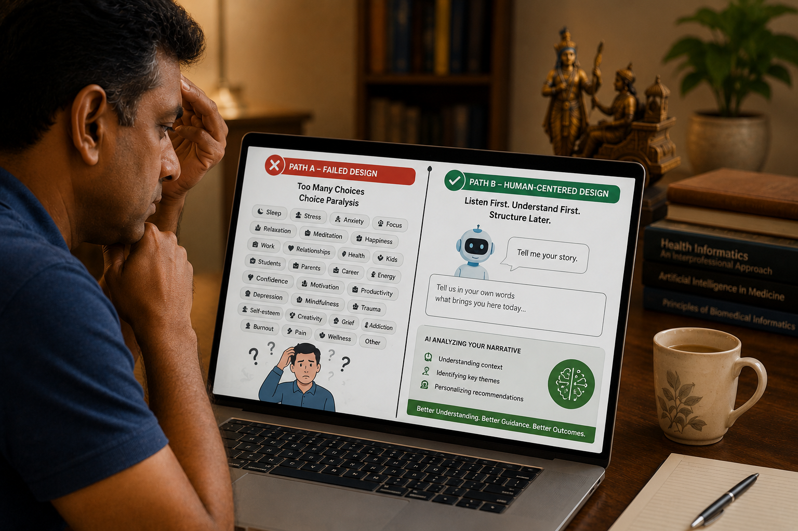

Sometimes the most useful lessons about healthcare come from places that have nothing to do with healthcare. A few weeks ago, I downloaded a popular entertainment and wellness application. My reason was simple — I wanted to see how the platform worked, how it used artificial intelligence, and how it interacted with ordinary users. I was not approaching it as a physician looking for clinical tools. I was trying to experience it the way an ordinary user might. A person who simply wanted some help and did not know exactly what kind.
Within a few minutes, I was frustrated. Not because of a technical problem. Not because anything had broken. The frustration came from something harder to name — a feeling of being asked to explain myself before anyone had even said hello.
The app opened with a screen full of choices. Dozens of categories. Checkboxes. Sliders. Goals. Interests. Preferences. It wanted me to classify myself before it had asked a single question about who I was or what had brought me there.
The more options I saw, the harder it became to choose. And the harder it became to choose, the more I wanted to close the application entirely.
I recognised what was happening immediately. As a physician, I have seen this before — in patients, in clinical settings, in health systems that try to be thorough but end up being overwhelming instead. The technical term is choice paralysis. The human experience of it is simpler: too many doors, and you cannot walk through any of them.

What Happens When There Are Too Many Doors
Most people who design digital products believe, quite reasonably, that more choices mean more freedom. If the system offers twenty options, surely the user will find one that fits. The logic is sensible. The experience, in practice, is often the opposite.
When we are presented with too many options at the same moment, decision-making becomes difficult. We begin comparing options we would not otherwise compare. We worry about choosing wrongly. We wonder whether any of the categories actually describe us. And in the space of that uncertainty, the simplest response — doing nothing, leaving, abandoning the process — starts to feel like the most reasonable one.
This is not a weakness in the user. It reflects a well-documented phenomenon in cognitive psychology — sometimes described as the paradox of choice (Schwartz, 2004) or choice overload — in which an excess of options impairs rather than improves decision-making. When the volume of choices presented simultaneously exceeds working memory capacity, the ability to decide does not sharpen. It diminishes.
The application had designed itself around a belief in comprehensiveness. It wanted to know everything about me before it offered anything to me. And in doing so, it had created the very experience it was trying to avoid: a user who felt lost, not helped.
A system that asks twenty questions before offering anything has prioritised its own data needs over the user's experience. Thoroughness is a virtue in analysis. At the point of first contact, it is often a barrier. The user does not arrive with a completed form. They arrive with a feeling, a worry, or a need they have not yet found the words for.
What a Good Consultation Actually Looks Like
My years as a general practitioner taught me a very different way of beginning.
When a patient enters the consultation room, I do not start with a checklist. I do not ask them to select their symptoms from a drop-down menu or indicate which category best describes their situation. I do not do any of the things that many digital health systems do in the first thirty seconds of an interaction.
I ask one question.
"What brings you here today?"
And then I listen.
The patient speaks. Sometimes for one minute, sometimes for ten. Sometimes the story seems disorganised — jumping between a headache last Tuesday, a difficult month at work, and a worry about a relative who was recently diagnosed with something frightening. Sometimes the connection between these things is not immediately clear.
But it is almost always there.
The patient's own words contain information that no checklist would have captured. Not just the symptom, but the context around it. Not just the problem, but the reason it feels like a problem right now, in this particular week of this particular life. Experienced clinicians know this. The story a patient tells, in their own words, before any structured questioning begins, frequently points toward the diagnosis more accurately than the structured questioning that follows it.
Only after listening — only after the patient has been given space to tell their story — do I begin asking specific questions. The sequence is not incidental. It is the whole point.
The story comes first. The structure comes second. As established clinical consultation frameworks — including the Calgary-Cambridge model and patient-centred care literature — consistently emphasise, listening precedes questioning. Some current AI systems have this order reversed.
The AI Chat That Could Not Listen
I persisted with the application long enough to reach its AI chat feature. I was curious. Perhaps the conversation, I thought, would feel more natural. Perhaps here the system would ask me something open, allow me to speak in my own words, and respond to what I actually said rather than to the category I had been assigned.
It did not.
The responses felt generic. Warm in tone, but without any real connection to what I had written. The system appeared to identify keywords in my messages and respond to those keywords — not to the meaning behind them, not to the particular way I had expressed something, not to the details I had included that signalled something specific about my situation.
It recognised words. It did not understand context.
It processed what I had written as data. It did not engage with it as a story.
And it never asked a follow-up question. A skilled clinician listens and then probes — gently, curiously, following the thread of what the patient has said to understand more. A skilled interviewer does the same. This AI did neither. It received what I offered, produced a response, and waited. Each reply felt like a destination rather than part of a conversation.
The interaction was not unpleasant. But it was hollow. And in a healthcare context, hollow is not good enough — because the user sitting on the other side of that chat is rarely just looking for information. They are usually carrying something they need help putting into words.
Patients do not arrive saying "I belong to category three." They say: "I haven't been sleeping properly since my mother became ill." Or: "I feel tired all the time and I don't know why." Those sentences contain the symptom, the trigger, the timeline, and the emotional context — all at once, in natural language. When we force users into predefined categories before they have had a chance to speak, we lose most of that information before the conversation has even begun.
What a Listening-First AI Would Look Like
The design problem I encountered is not inevitable. It is a choice — and a different choice is possible.
Imagine the same application opening with a single, open question. Not a checklist. Not a category selector. Just:
"Tell us, in your own words, what brings you here today."
The user types: "I have been feeling very stressed at work for the past few weeks and I haven't been sleeping well."
The AI reads that response. It identifies the themes — work pressure, poor sleep, a specific timeframe, an emotional state. It understands that this person has not described themselves as someone in "Category C: Stress and Sleep." They have described a human experience with a context and a duration and a feeling attached to it.
Only then does the system begin asking focused questions. Not twenty at once. One or two — the ones that naturally follow from what was said. The conversation deepens gradually, the way real conversations do.
The user feels heard. The system collects richer, more accurate information. And the eventual recommendations are grounded in something real, rather than in the category the user felt forced to select from a list that did not quite fit.
The order in which a system asks for information shapes the entire quality of what it receives. A system that demands classification before conversation will collect data efficiently and understand people poorly. A system that listens first will collect data more slowly — and understand far more.
- Opens with checkboxes and categories
- User must classify themselves before speaking
- Responses feel generic and mechanical
- No follow-up questions asked
- User feels processed, not understood
- Opens with one open question
- User speaks in their own words
- AI responds to context, not just keywords
- Follow-up questions emerge naturally
- User feels heard before being assessed
This Is a Governance Question, Not Just a Design Question
It would be easy to treat what I experienced as a minor user interface problem — something for designers to fix in the next software update. But I think it is something more than that.
Design choices are governance choices. Every decision about how an AI system communicates with a user has consequences for what the user understands, what they disclose, what they trust, and what they decide to do next. When a healthcare AI overwhelms users with choices at the point of first contact, it is not simply creating a bad experience. It is shaping the quality of the information it collects, the trust the user extends, and ultimately the outcomes that follow from the interaction.
Responsible AI governance in healthcare is not only about algorithms, data privacy, and safety regulations — though all of those matter. It is also about how the system treats a human being who arrives with a need they may not yet fully understand, in language that does not yet fit neatly into any category.
Does the system make them feel heard? Does it reduce their burden rather than adding to it? Does it follow the logic of human communication rather than the logic of database structure? These questions are just as important as technical performance metrics. They determine whether the technology actually helps — or simply processes.
- 1 Begin with one open question. Before any checklist or category selection, give the user space to speak in their own words. The information they volunteer without prompting is often the most valuable.
- 2 Respond to meaning, not just keywords. A system that identifies the word "tired" and responds with sleep tips has missed the point. Context — the work pressure, the recent change, the particular worry — is where the real information lives.
- 3 Ask follow-up questions. Real conversation deepens. A system that gives a complete response to every message without asking anything further is not listening. It is processing and closing.
- 4 Introduce structure gradually. After the story has been heard, structured questions have a place — they sharpen and clarify. The problem is introducing them before the story, not after it.
- 5 Measure whether users feel understood, not just whether they completed the onboarding. A user who clicked through all the checkboxes and left feeling unheard has not been served — regardless of what the completion metrics say.
A simple frustrating experience with an entertainment application reminded me of something medicine has known for a very long time. Good decisions begin with good listening. The most effective AI systems may not be those that ask the most questions — they may be those that know, at exactly the right moment, to stop asking and simply listen. And perhaps the future of human-centred AI begins with the same question that has guided good clinical practice across generations: Tell me what brings you here today.